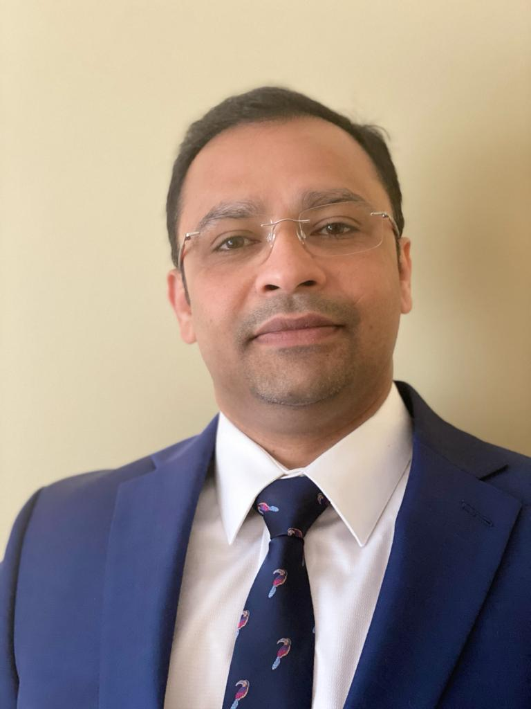

About Me

My name is Mathew P. I was born and raised in India. I am Swiss Business Grad; class of 1996. I am a really fun person. I like to practice cricket and ply with my kid. Interested in cooking treditional Indian food.
As a scrum lead, I empower individuals, teams, and organizations to be self-managed and self-organized. Bringing in fresh energy and creativity, I create space for everyone to be involved in shaping the future and make a positive impact on their organization. I often change my hats as a facilitator, servant leader, mentor, problem solver, conflict navigator, visualizer and as a learner.
My main focus is creating successful teams with strong skills in self-organization and cross-functionality and a drive for continuous improvement. I support Product Owners in visualizing progress, creating a transparent Product Backlog and maximizing the value of the product. I help organizations in making Scrum successful by supporting management in changing processes, procedures, culture and behavior. I bring value to a company’s digital transformation journey to adapt agile and articulate behavioral pattern to embrace agility. I am about to finish my bootcamp, to become a full stack developer.
Connect with Me